Brick & Mortar Tinting
Far too often new bricks selected for extensions or repair works fail to blend adequately with the surrounding brickwork. Likewise, differences in mortar colour can make a big difference to the overall appearance. The photos of our work below demonstrate that even in extreme cases, corrections can be made.
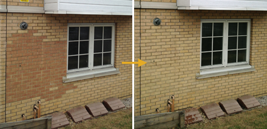
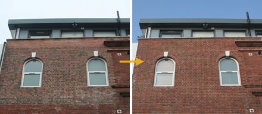
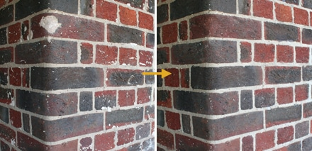
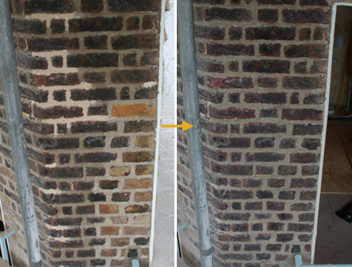
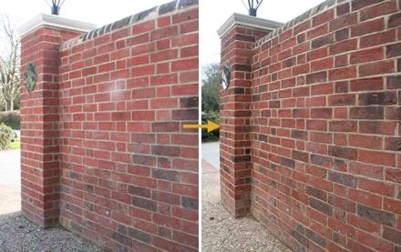
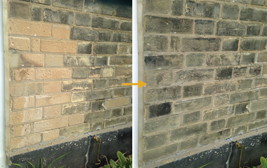
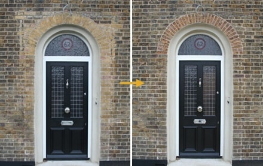
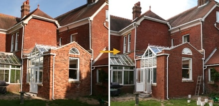
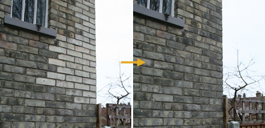
 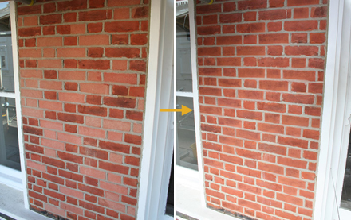
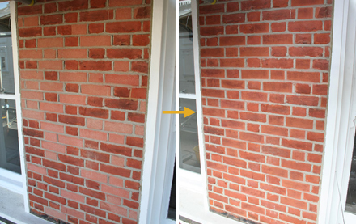
 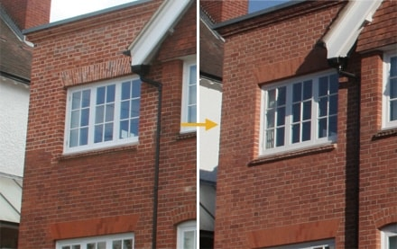
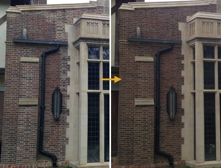
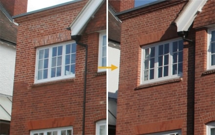
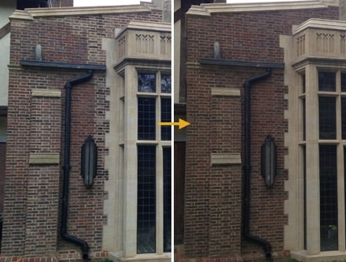
 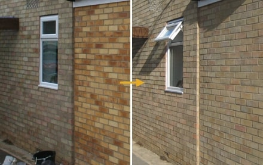
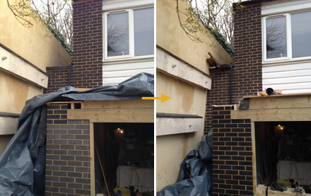
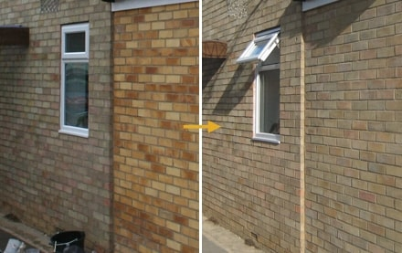
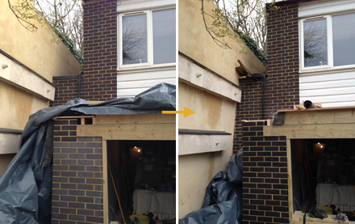

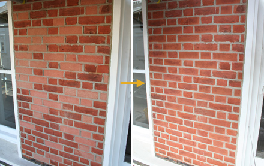
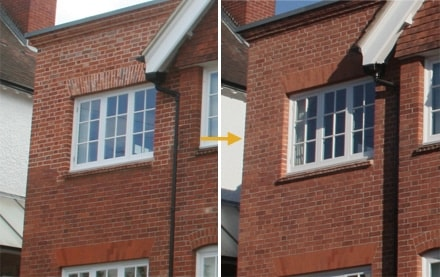
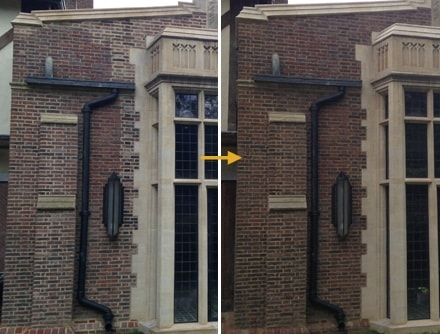
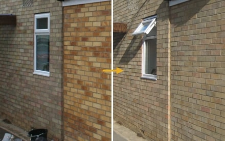
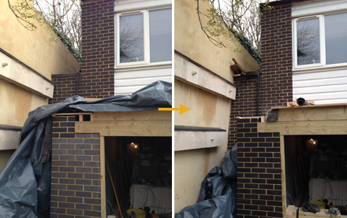